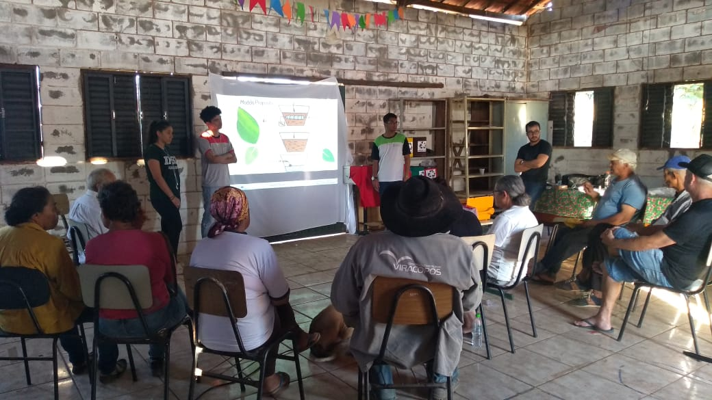
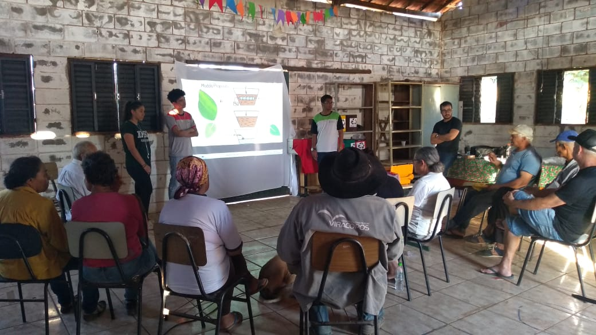

Avaliações e Validações Participativas
A metodologia de Pesquisa-ação desenvolvida por todas as frentes do projeto prevê formas de avaliações e validações participativas do público alvo da ação, compreendendo-os como sujeitos autônomos e ativos na verificação da eficácia e aplicabilidade das tecnologias em seu próprio cotidiano.
Avaliações
1. Curso FIC, 2ª edição 2019
A avaliação foi proposta aos alunos do curso de formação inicial e continuada do primeiro semestre de 2019, com três perguntas geradoras: Que bom; Que pena; Que tal?. Os participantes que não dispunham do domínio da escrita puderam responder oralmente às questões e um relator as transcreveu.
Veja o resultado.2. Avaliação Grupos de consumo
A avaliação online foi proposta aos grupos de consumo das cestas agroecológicas no ano de 2018, para avaliar a satisfação do grupo para com os alimentos, periodicidade de entrega, quantidade e etc, proporcionando devolutivas dos consumidores sobre os arranjos comerciais propostos e o fortalecimento do vínculo político-comunitário dos envolvidos.
Veja mais.Validações Participativas
Dispositivos técnicos
Todos os dispositivos técnicos elaborados e em desenvolvimento são validados com a comunidade participante das ações para que haja verificação dos objetivos, aplicabilidade, manuseio, aprimoramento das funcionalidades e monitoramento do desempenho para correções ou replicação para outras unidades. Os processos de validação participativa ocorrem no território do Assentamento em coletivo ou em Unidade de Referência selecionada pelos próprios agricultores e agricultoras em reuniões anteriores da Cooperativa.
1. Validação Participativa – Irrigador Automatizado
A validação deste projeto ocorreu na primeira versão do protótipo, em outubro de 2018, e na instalação da peça de campo final, em junho de 2019.
Veja o resultado.

 
